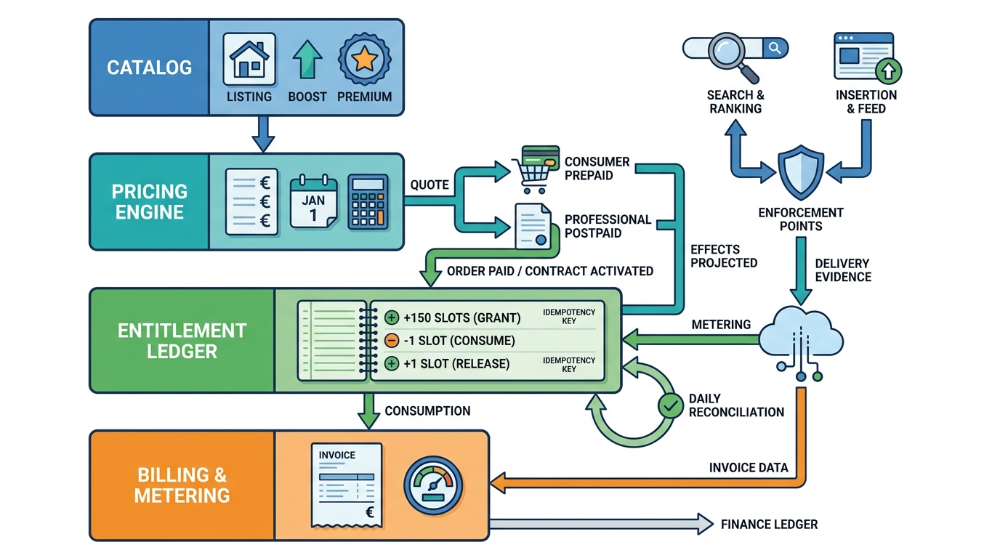

Part VI — MONEY: Conversion and Monetization
Packages, Bumps and Quotas: Products, Pricing and Entitlements

Image generated by Google Gemini (gemini-3-pro-image-preview)
Part VI — MONEY: Conversion and Monetization

Image generated by Google Gemini (gemini-3-pro-image-preview)